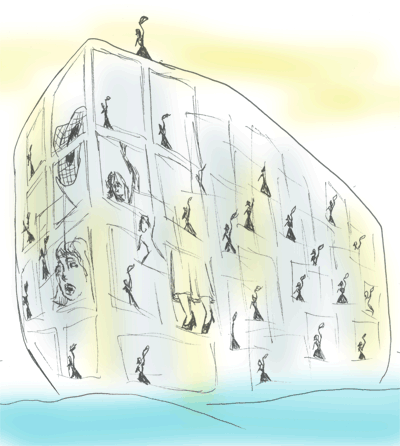

Dreams
by Christine Potter
So often, there’s been a mistake: you don’t
really know anything. Your high school
is a warren of classrooms without ceilings,
you are both student and teacher, it’s late,
and you have lost your schedule card. You watch
yourself walk into the basement and discover
you can see through five stories of glass floors
to the sky. It is already night. The ocean liner
you must board is aground and its bulk is terrifying.
Your mother waves to you from the deck and
there is no way to reach her. You are still married
to your ex-husband but lose him in a deserted
city, and his father, dead for twenty years,
is the cop who pulls you over for speeding.
He wants a kiss on the cheek and looks at you
so lovingly that you begin to cry. Awakening
is like reaching out a hand to break through
unexpected strands of spiderwebs. Perhaps
you can still see something lost in the fire
of early sun in your bedroom mirror, like film
ripped out of a camera, gone opaque. And then
you work at forgetting it all without even knowing
that work, except you are still sad until a woodpecker
lights in the tree outside and begins his hammering.

 |
|